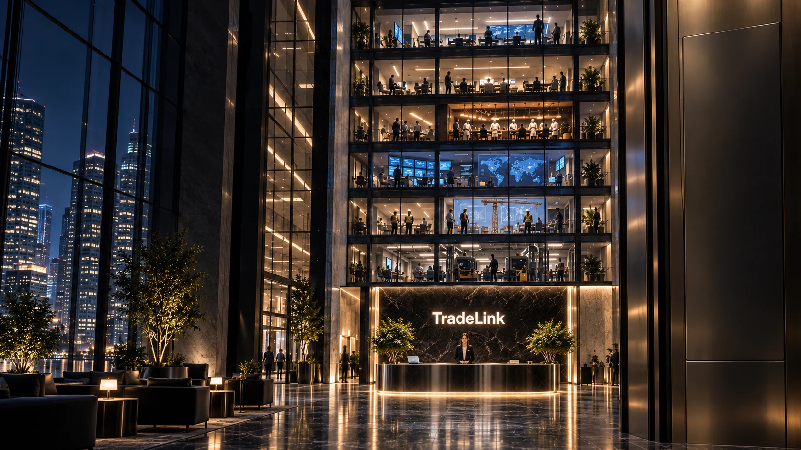

Silnější zítřek
TradeLinkMísto, kde se propojuje byznys.
Propojte firmy, pracovníky a příležitosti na jednom místě.
Najděte kvalifikované pracovníky, obchodní partnery, subdodavatele, služby a nové příležitosti napříč obory.
124pracovníků k dispozici
38aktivních poptávek
21firem nabírá
Nová příležitostpřidána před 2 min